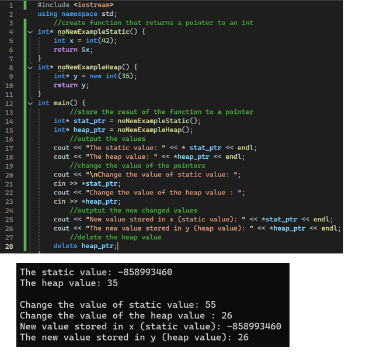

Heap variable
Heap array
new and return operator

code breakdown
- create new item: d_type* name = new d_type(element)
delete heap variable: delete heap_var
- d_type : datatype of the value assigned to the variable
* name : This creates a pointer and name is the name of the pointer
element : the element being assigned to the pointer
- note: